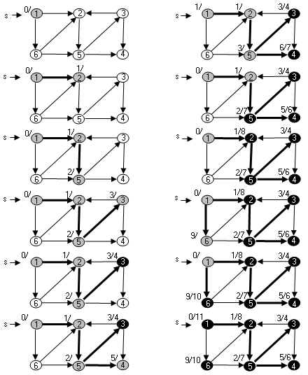
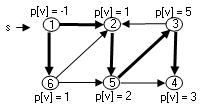
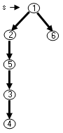
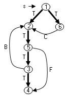

|
|
|
|
|
Стратегия поиска в глубину (Depth - First Search - DFS) следующая: идти "вглубь" пока это возможно (у вершины есть не пройденные исходящие ребра), возвращаться и искать другой путь, когда таких ребер нет. Если после этого остаются необнаруженные вершины, можно выбрать одну из них и повторить процесс и делать так до тех пор, пока не будут обнаружены все вершины графа [3]. Как и при поиске в ширину используются поля p[u] с помощью которых формируется подграф предшествования или несколько подграфов предшествования в случае не связного графа. Такой подграф называется лесом поиска в глубину, состоящий из деревьев поиска в глубину отдельных звязных компонент. Кроме того, для вершины используются поле color[u], задающее БЕЛЫЙ, СЕРЫЙ или ЧЕРНЫЙ цвет. В начале все вершины белые. В процессе поиска при обнаружении вершина становится серой. Вершина становится черной, когда она полностью обработана, т. е. когда список смежных с ней вершин полностью просмотрен. Каждая вершина попадает только в одно дерево поиска в глубину, и эти деревья не пересекаются. Дополнительно алгоритм поиска в глубину использует метки времени. Каждая вершина имеет две метки d[u] отражает время, когда вершина впервые обнаружена и стала серой, а f[u] - время, когда закончена обработка смежных с вершиной u вершин. Метки времени используются во многих алгоритмах, использующих поиск в глубину. В
алгоритме DFS
метки являются целыми числами от 1 до 2 Вершина u белая до времени d[u], серая между временем d[u] и временем f[u], черная после времени f[u]. Для меток времени в алгоритме DFS используется глобальная переменная текущего времени time. DFS (G)
1.
for
для каждой вершины
u
2. do color [u] ← БЕЛЫЙ
3.
p[u] ←
nil
4. time ← 0
5.
for
для каждой вершины
u
6. do if color [u] = БЕЛЫЙ 7. then DFS -Visit (u)
DFS -Visit (u)
1.
color
[u]
← СЕРЫЙ
2. d[u] ← time 3. time ← time + 1
4.
for
для каждой вершины v
5. do if color [v] = БЕЛЫЙ 6. then p[v] ← u 7. DFS -Visit (v) 8. color [u] ← ЧЕРНЫЙ 9. f[u] ← time 10. time ← time + 1 Вершины, для которых вызывается функция DFS -Visit из функции DFS, становятся корнями деревьев поиска в глубину.
Иллюстрация работы алгоритма DFS для орграфа: 
Трудоемкость алгоритма поиска в глубинуЦиклы в функции DFS 1 - 3 и 5 - 7 требуют O(V) времени. Функция DFS - Visit вызывается один раз для каждой вершины. В функции DFS - Visit цикл 3 - 6 выполняется Adj[V] раз. По всем вершинам графа общее время функции DFS - Visit оценивается как O[E]. Таким образом общее время обхода в глубину оценивается, как O(V + E).
Дерево обхода в глубинуВ ходе работы алгоритма в вершинах фиксируются параметры d[v] / f[v] - метки времени обнаружения вершины (d[v] ) и времени завершения обработки вершины (f[v] ). Кроме того, в вершинах фиксируются номера вершин - предшественников ( p[v]). Эти номера позволяют выделить в графе подграф предшествования, построенный с помощью алгоритма DFS, который в точности соответствует структуре рекурсивных вызовов DFS - Visit. 
Подграф предшествования является деревом поиска в глубину, задаваемым полями p[v]. В частности для рассматриваемого примера получилось дерево:  Если граф не связный, то в результате полного обхода в глубину строится лес обхода в глубину, состоящий из деревьев обхода в глубину, соответствующих отдельным связным компонентам.
Классификация ребер графаПри поиске в глубину ребра графа делятся на несколько категорий. Классификация ребер оказывается полезной в различных задачах. Она позволяет, например, распознать в графах циклы. Ребра при поиске в глубину делятся на древесные ребра (Tree edges), обратные ребра (Back edges), прямые дуги (Forwarg edges) и перекрестные дуги (Cross edges). Древесные ребра (T) - ребра подграфа предшествования. Обратные ребра (B) - ребра (u, v), соединяющие вершину u с ее предком v в дереве поиска в глубину. Прямые дуги (F) - соединяют вершину u с ее потомком, но не входят в дерево поиска в глубину. Перекрестные дуги (C) - все остальные ребра графа. Они могут соединять две вершины одного дерева поиска в глубину, если ни одна из этих вершин не является предком другой, или вершины разных поддеревьев. Понятия прямых и перекрестных дуги применимо только для ориентированных графов Для рассмотренного в примере дерева поиска орграфа ребра классифицируются следующим образом: 
В ходе алгоритма DFS ребро можно различить по цвету вершины, к которой оно ведет. Если вершина - белая - то это ребро дерева поиска (T), если цвет вершины серый - то это обратное ребро (B), если цвет черный - то это прямое (F) или перекрестное ребро (C). Чтобы отличить прямые и перекрестные ребра можно воспользоваться меткой времени d[v]. Ребро (u, v) оказывается прямым, если d[u]<d[v], и перекрестным, если d[u] > d[v]. Для неориентированных графов ребро (u, v) рассматривается дважды и может попасть в разные категории. Поэтому ребро относится к категории, которая стоит раньше в перечне из 4 - х категорий. Либо тип ребра определяется при первой его обработке и не меняется при второй. В неориентированном графе ребро оказывается либо ребром дерева поиска (T), либо обратным ребром (B), прямых и поперечных ребер в неориентированном графе нет. |
|
|